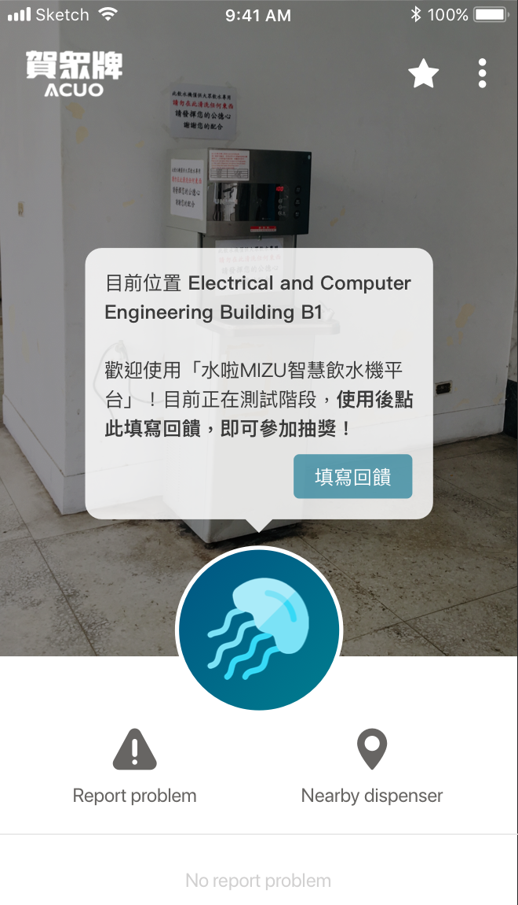
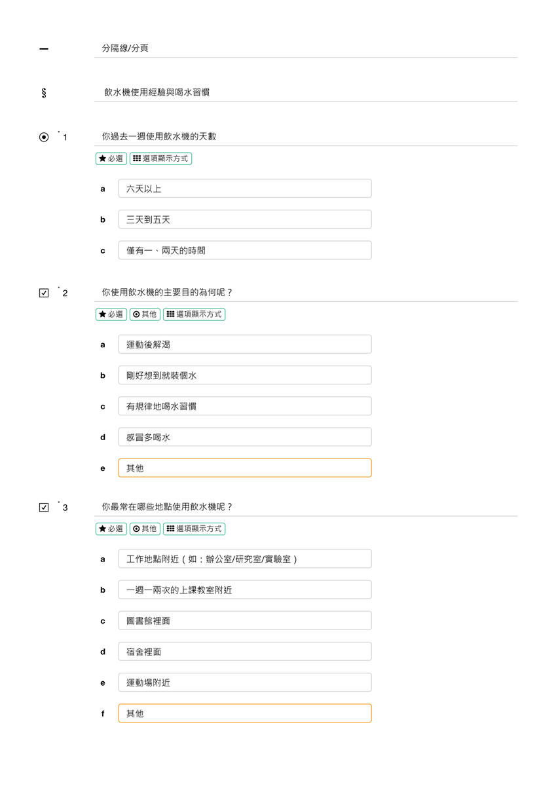
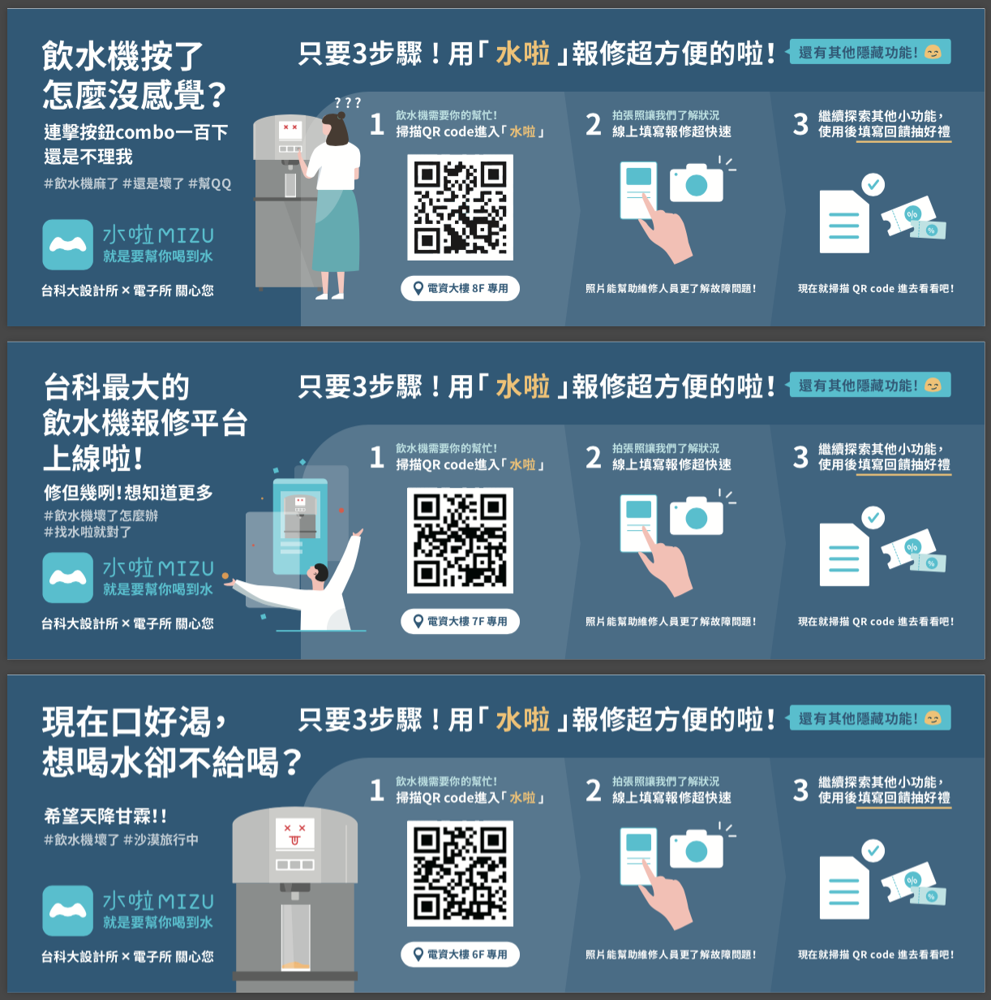
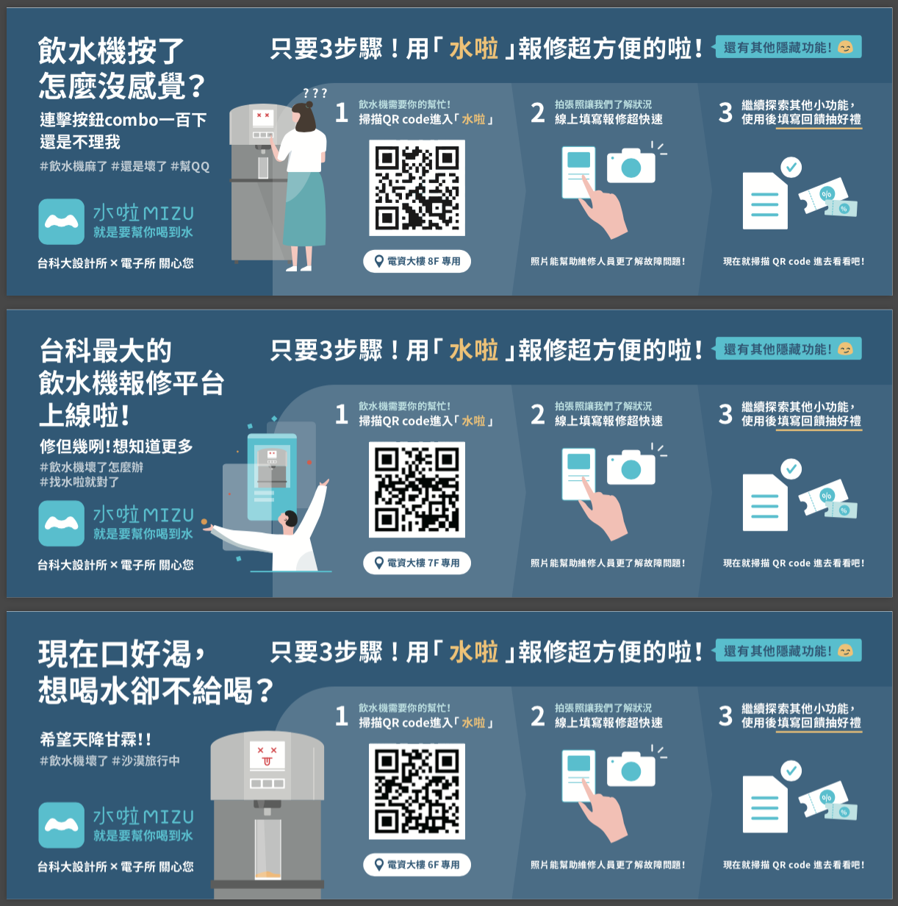

Posted by Ann 姜瓔育 · Jan 11, 2020 at 5:08 PM 0112 報修者 測試問卷 問卷目的 收集產品使用回饋 尋找受訪者 問卷入口「水啦」首頁放置連結按鈕  問卷入口首頁連結（LOGO會換掉） • Download 問卷架構 引言 飲水機使用經驗與喝水習慣 產品使用經驗與回饋 分4項功能詢問使用經驗（含KANO與NPS） 填答抽獎與訪談意願資料填寫 問卷連結水啦 MIZU 智慧飲水機平台 回饋小問卷 SurveyCake附檔為 PDF 易讀版  0112 水啦 MIZU 智慧飲水機平台 回饋小問卷 SurveyCake.pdf 1.19 MB • Download Comments & Events Hsien-Hui Tang 唐玄輝, 總監 問卷的目的和預期收集的成果是？ Jan 12, 2020 at 1:33 PM Notified 1 person Ann 姜瓔育, 碩士生 如內文所述：問卷目的 收集產品使用回饋 尋找受訪者 另外NPS和KANO預期作為產品功能迭代的依據 Jan 12, 2020 at 3:07 PM Notified 1 person Ann 姜瓔育, 碩士生 搭配張貼立牌（共三款，分佈在EE九層樓做測試）： https://drive.google.com/open?id=10qPB2_kZGaULTVhmrEFjfcJnhnQhuIM-  image.png 459 KB • Download Jan 21, 2020 at 4:03 PM Notified 1 person Hsien-Hui Tang 唐玄輝, 總監 整體蠻好的EE九樓有幾台？是否有平面圖？以下是建議飲水機問卷我們是台科大設計系和電子系組成的智慧飲水機團隊💧，試圖改善台科大的飲水體驗，目前正在測試階段，望獲得產品回饋，招募受訪者，更加了解大家真實的使用行為，提供台科大更好的飲水體驗。## 聯絡電話僅用於“得獎”聯絡使用 （電話本來就是用來聯絡的）問卷可以重複填寫嗎？ 如果沒有使用過功能是否可以填寫回報故障功能 是否可以有回報正常的選項，讓飲水機沒有壞還是可以測試功能尋找附近飲水機 查看維修進度 如果飲水機沒有壞，使用時要顯示沒有維修進度追蹤飲水機 是追蹤維修進度嗎？建議寫追蹤維修進度，比較清楚。如果沒有維修，要顯示沒有維修進度，這樣才能測試功能。‘如果四個功能只有使用過一個，只能回答一個，那如果有試過其他功能，可以再填寫問卷嗎？或是先鼓勵大家試用全部的功能？可以向後想如何做飲水鼓勵與飲水紀錄，找學妹一起想吧～～ Jan 23, 2020 at 2:09 AM Notified 1 person Ann 姜瓔育, 碩士生 感謝老師的回覆！ 整體蠻好的EE九樓有幾台？是否有平面圖？以下是建議 每層樓各有一台（B1-8F），平面圖沒有顯示在報修者端，但電子系有手動建檔在後台（一台一台繪製位置，如果有變動飲水機位置就要重新繪製的那種）。 問卷可以重複填寫嗎？ 如果四個功能只有使用過一個，只能回答一個，那如果有試過其他功能，可以再填寫問卷嗎？或是先鼓勵大家試用全部的功能？ 這邊也是考量有人可能是分次使用不同功能，或是用了同樣功能有不同的回饋，所以沒有嚴格限制一人只能填寫一次。 如果沒有使用過功能是否可以填寫 有在首頁和問卷開始說明使用過功能才可以填寫，所以一開始也要先選用過哪些功能，才進入那個功能的問題。 回報故障功能 是否可以有回報正常的選項，讓飲水機沒有壞還是可以測試功能 我覺得這個功能主要還是以機器真的有故障再使用就好了，因為會影響到後台管理人員和派工人員的派單，還有追蹤維修進度的功能。如果是以測試來說，似乎也沒有必要為了測試填寫表單的步驟，而影響到其他功能～ 查看維修進度 如果飲水機沒有壞，使用時要顯示沒有維修進度 如果沒有人報修，現在會顯示「目前無回報問題」。 追蹤飲水機 是追蹤維修進度嗎？建議寫追蹤維修進度，比較清楚。如果沒有維修，要顯示沒有維修進度，這樣才能測試功能。 問卷已修正「追蹤維修進度」！如果沒有報修，點按追蹤icon應該要說明「目前沒有維修進度」，再請工程師改文字。「追蹤維修進度」：登入狀況、維修狀況 1. 如果現在沒有維修，點按星號：「目前沒有維修進度」2. 如果沒有登入，點按星號：「登入後才能使用此功能」 3. 如果登入，而且現在有維修，點按星號：「成功加入追蹤，維修完成後將收到信件通知！」 可以向後想如何做飲水鼓勵與飲水紀錄，找學妹一起想吧～～ 沒問題！已經有陸續開始想了 Jan 23, 2020 at 5:51 AM Notified 1 person
Ann 姜瓔育, 碩士生 如內文所述：問卷目的 收集產品使用回饋 尋找受訪者 另外NPS和KANO預期作為產品功能迭代的依據 Jan 12, 2020 at 3:07 PM Notified 1 person
Ann 姜瓔育, 碩士生 搭配張貼立牌（共三款，分佈在EE九層樓做測試）： https://drive.google.com/open?id=10qPB2_kZGaULTVhmrEFjfcJnhnQhuIM-  image.png 459 KB • Download Jan 21, 2020 at 4:03 PM Notified 1 person
Hsien-Hui Tang 唐玄輝, 總監 整體蠻好的EE九樓有幾台？是否有平面圖？以下是建議飲水機問卷我們是台科大設計系和電子系組成的智慧飲水機團隊💧，試圖改善台科大的飲水體驗，目前正在測試階段，望獲得產品回饋，招募受訪者，更加了解大家真實的使用行為，提供台科大更好的飲水體驗。## 聯絡電話僅用於“得獎”聯絡使用 （電話本來就是用來聯絡的）問卷可以重複填寫嗎？ 如果沒有使用過功能是否可以填寫回報故障功能 是否可以有回報正常的選項，讓飲水機沒有壞還是可以測試功能尋找附近飲水機 查看維修進度 如果飲水機沒有壞，使用時要顯示沒有維修進度追蹤飲水機 是追蹤維修進度嗎？建議寫追蹤維修進度，比較清楚。如果沒有維修，要顯示沒有維修進度，這樣才能測試功能。‘如果四個功能只有使用過一個，只能回答一個，那如果有試過其他功能，可以再填寫問卷嗎？或是先鼓勵大家試用全部的功能？可以向後想如何做飲水鼓勵與飲水紀錄，找學妹一起想吧～～ Jan 23, 2020 at 2:09 AM Notified 1 person
Ann 姜瓔育, 碩士生 感謝老師的回覆！ 整體蠻好的EE九樓有幾台？是否有平面圖？以下是建議 每層樓各有一台（B1-8F），平面圖沒有顯示在報修者端，但電子系有手動建檔在後台（一台一台繪製位置，如果有變動飲水機位置就要重新繪製的那種）。 問卷可以重複填寫嗎？ 如果四個功能只有使用過一個，只能回答一個，那如果有試過其他功能，可以再填寫問卷嗎？或是先鼓勵大家試用全部的功能？ 這邊也是考量有人可能是分次使用不同功能，或是用了同樣功能有不同的回饋，所以沒有嚴格限制一人只能填寫一次。 如果沒有使用過功能是否可以填寫 有在首頁和問卷開始說明使用過功能才可以填寫，所以一開始也要先選用過哪些功能，才進入那個功能的問題。 回報故障功能 是否可以有回報正常的選項，讓飲水機沒有壞還是可以測試功能 我覺得這個功能主要還是以機器真的有故障再使用就好了，因為會影響到後台管理人員和派工人員的派單，還有追蹤維修進度的功能。如果是以測試來說，似乎也沒有必要為了測試填寫表單的步驟，而影響到其他功能～ 查看維修進度 如果飲水機沒有壞，使用時要顯示沒有維修進度 如果沒有人報修，現在會顯示「目前無回報問題」。 追蹤飲水機 是追蹤維修進度嗎？建議寫追蹤維修進度，比較清楚。如果沒有維修，要顯示沒有維修進度，這樣才能測試功能。 問卷已修正「追蹤維修進度」！如果沒有報修，點按追蹤icon應該要說明「目前沒有維修進度」，再請工程師改文字。「追蹤維修進度」：登入狀況、維修狀況 1. 如果現在沒有維修，點按星號：「目前沒有維修進度」2. 如果沒有登入，點按星號：「登入後才能使用此功能」 3. 如果登入，而且現在有維修，點按星號：「成功加入追蹤，維修完成後將收到信件通知！」 可以向後想如何做飲水鼓勵與飲水紀錄，找學妹一起想吧～～ 沒問題！已經有陸續開始想了 Jan 23, 2020 at 5:51 AM Notified 1 person
問卷目的
https://drive.google.com/open?id=10qPB2_kZGaULTVhmrEFjfcJnhnQhuIM-
飲水機問卷
我們是台科大設計系和電子系組成的智慧飲水機團隊💧，試圖改善台科大的飲水體驗，目前正在測試階段，望獲得產品回饋，招募受訪者，更加了解大家真實的使用行為，提供台科大更好的飲水體驗。
##
聯絡電話
僅用於“得獎”聯絡使用 （電話本來就是用來聯絡的）
問卷可以重複填寫嗎？
如果沒有使用過功能是否可以填寫
回報故障功能 是否可以有回報正常的選項，讓飲水機沒有壞還是可以測試功能
尋找附近飲水機
查看維修進度 如果飲水機沒有壞，使用時要顯示沒有維修進度
追蹤飲水機 是追蹤維修進度嗎？建議寫追蹤維修進度，比較清楚。如果沒有維修，要顯示沒有維修進度，這樣才能測試功能。‘
如果四個功能只有使用過一個，只能回答一個，那如果有試過其他功能，可以再填寫問卷嗎？或是先鼓勵大家試用全部的功能？
可以向後想如何做飲水鼓勵與飲水紀錄，找學妹一起想吧～～
如果是以測試來說，似乎也沒有必要為了測試填寫表單的步驟，而影響到其他功能～
如果沒有報修，點按追蹤icon應該要說明「目前沒有維修進度」，再請工程師改文字。
「追蹤維修進度」：登入狀況、維修狀況
2. 如果沒有登入，點按星號：「登入後才能使用此功能」